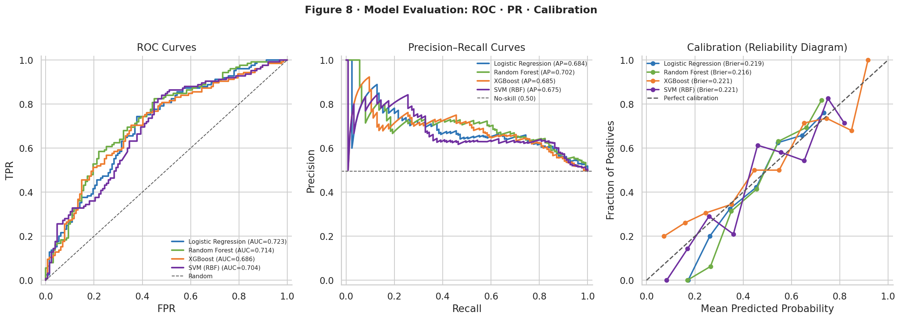
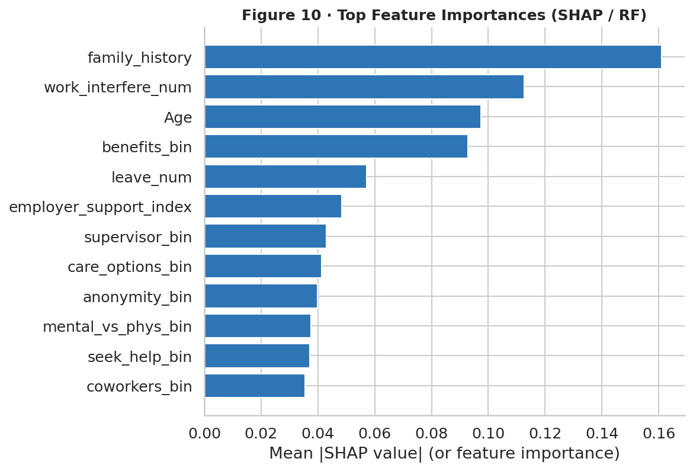
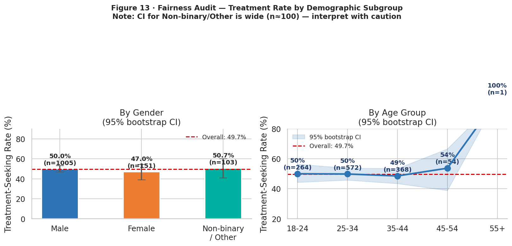

The model I shipped wasn't the best one.
Four classifiers, SHAP attributions, and a fairness audit across gender, age, and company size. The neural net scored higher. I shipped the logistic regression.
- Best AUC
- 0.723
- Models
- 4 compared
- Audit
- 3 attributes
- Shipped
- Logistic Reg.
The comparison, honestly.
Four models on the same data, same splits, same evaluation. The spread between them was narrow — which is itself the interesting finding.
| Model | Result |
|---|---|
| Logistic Regression | AUC 0.723 · Accuracy 68.2% · F1 0.68 — the one that shipped |
| Random Forest | AUC 0.716 · Accuracy 70.1% · F1 0.67 |
| XGBoost | AUC 0.714 · Accuracy 69.8% · F1 0.66 |
| Neural Network | AUC 0.709 · Accuracy 68.9% · F1 0.65 |

An AUC of 0.723 is a modest number and I state it plainly. Human decisions about seeking healthcare are shaped by factors no survey captures. A model claiming 0.95 on this problem would be evidence of leakage, not insight.
What matters more than the headline metric is whether the ranking is trustworthy and whether it holds across subgroups. That's what the rest of the work went into.
Why the weaker model won.
The neural network was within noise of logistic regression, and in one framing slightly ahead. I chose the logistic regression anyway, for reasons that had nothing to do with the leaderboard:
- Any single prediction can be explained. For a model touching people's health, "the model said so" is not an acceptable answer to someone affected by it.
- Coefficients are auditable directly. A reviewer can read the model rather than probe it.
- The margin didn't survive scrutiny. A fractional AUC difference between architectures on a dataset this size is not a real difference. Trading interpretability for it is a bad trade.

A model that's accurate on average but wrong for a subgroup is a liability, not a win.
The fairness audit.
Before I'd defend the model to anyone, I checked whether it behaved consistently across gender, age, and company size. Aggregate performance hides subgroup failure, and subgroup failure is the kind that ends up in front of a regulator.
The class imbalance was handled with SMOTE during training, applied inside the cross-validation folds rather than before splitting — resampling before the split leaks synthetic neighbours across the boundary and quietly inflates every metric you report afterward.

The finding I had to walk back
An early feature looked like a strong predictor. On closer inspection it was acting as a proxy for company size in a way that overstated the model's real signal. It would have made the results look better.
I led with it rather than burying it — showed the diagnostic, explained the mechanism, and proposed the fix. The honest version was more defensible than the flattering one, and it's the version I'd put in front of a skeptical reviewer.